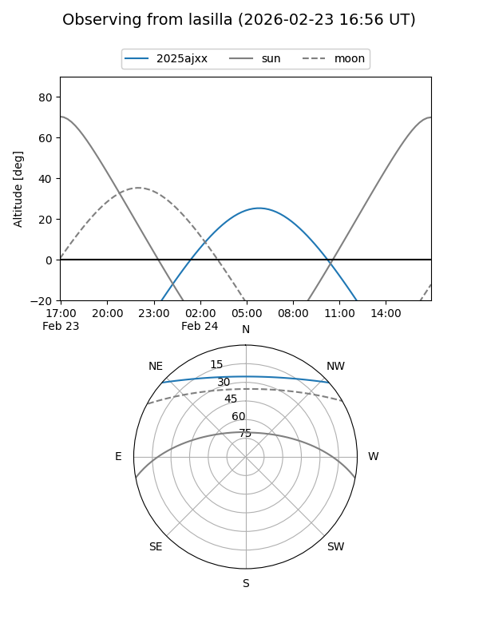
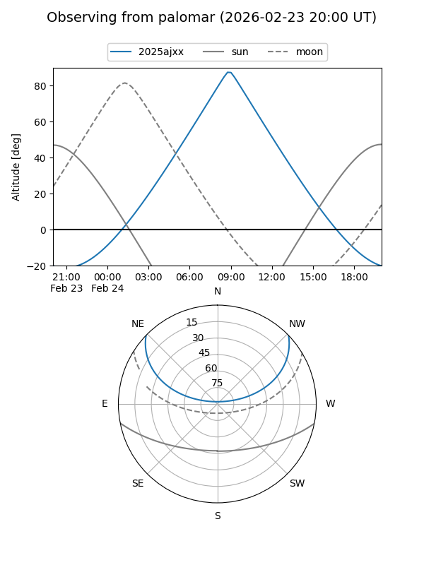

2025ajxx
Target 2025ajxx at 2025-12-31 18:01
Aliases and brokers:
FINK: link
Lasair: link
ALeRCE: link
TNS: link
YSE: link
alt names
ZTF25acgtaus (ztf,fink_ztf)
2025ajxx (tns,yse)
Coordinates:
equatorial (ra, dec) = 170.2474,+35.55356
equatorial (HMS+DMS) = 11:20:59.37,+35:33:12.82
galactic (l, b) = (183.7022,+68.99478)
Flags:
Photometry:
last ztfg=20.27
3 ztfg detections
Lightcurve

Visibility


Additional plots